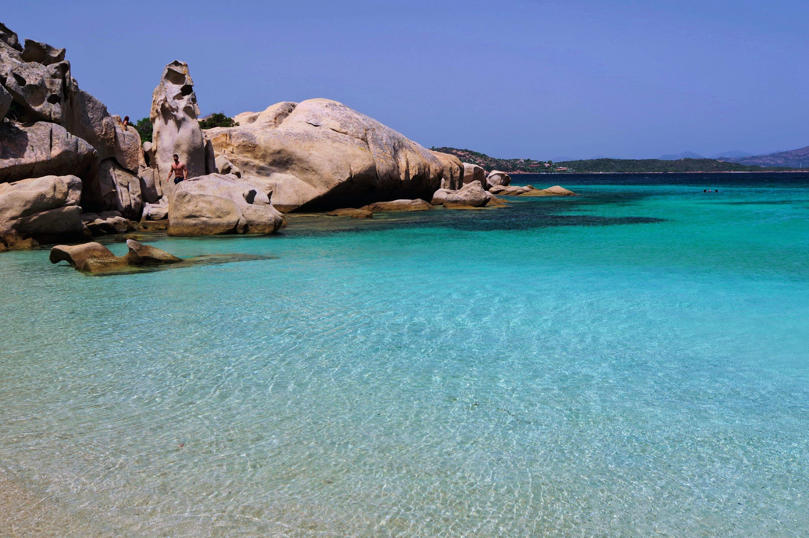

Richieste e prenotazioni
Contattateci per progettare su misura la vostra giornata in mare, per un preventivo trasparente, o per organizzare il vostro soggiorno esclusivo nei nostri appartamenti.
Curiamo ogni prenotazione e richiesta con dedizione e professionalità. Rivolgendovi direttamente a noi otterrete la massima rapidità nelle comunicazioni e l'accesso alle migliori tariffe disponibili, evitando rincari o commissioni intermediarie.
WhatsApp / Telefono
Il nostro tratto distintivo è la comodità: veniamo a prendervi nei principali porti della Costa Smeralda, tra cui Porto Cervo, Poltu Quatu e le migliori marine della zona.
(La base nautica logistica dell'imbarcazione si trova a Cannigione).
Il nostro residence si colloca nella magnifica cornice di Baja Sardinia (OT), in posizione centrale e privilegiata rispetto al mare e ai rinomati servizi del paese.

Vivi la magia Vi aspettiamo a bordo